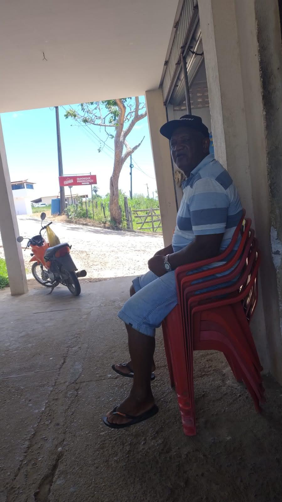
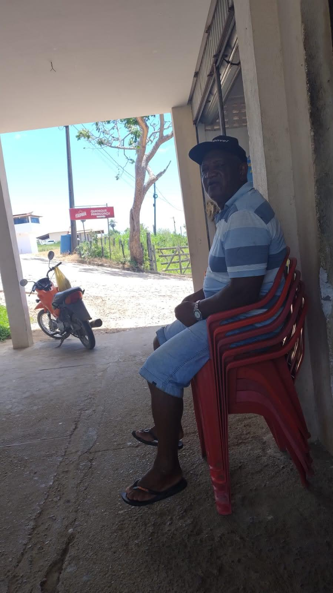

💙 Feliz Dia dos Pais, Vô 💙
Hoje celebramos não só os pais, mas também o avô que carrega no coração o amor de duas gerações.
Vô, você é nosso exemplo de força, de caráter e de um amor que nunca se mede, apenas se sente.
Como filhas, agradecemos por cada gesto, cada conselho e cada sacrifício feito com amor para nos ver felizes.
Como neta, agradeço pelas histórias que aquecem a alma, pelos abraços que curam qualquer tristeza e pelos sorrisos que iluminam nossos dias.
Você é o alicerce da nossa família, o porto seguro onde sempre encontramos abrigo.
Que Deus lhe conceda muita saúde, alegrias sem fim e muitos anos para continuarmos colecionando memórias juntos.
Nós te amamos para sempre! ❤️
Com todo o carinho,
Suas filhas e sua neta
 
